Coupled Cluster¶
In this section the working equations for Coupled Cluster can be found.
Coupled Cluster Singles Double¶
For CCSD the T1 (tia) and T2 (tijab) amplitudes is constructed to calculate the energy. These are constructed by the fisrt creating some intermediates:
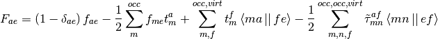
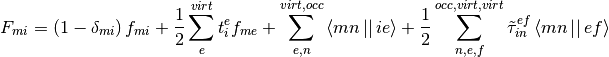
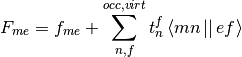
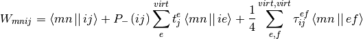
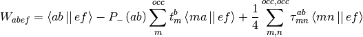
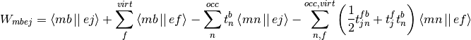
In the above equations the following definitions is used:
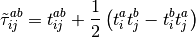
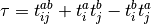
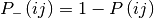
The T1 and T2 is the constructed as:
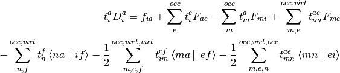
![t_{ij}^{ab}D_{ij}^{ab}=\left\langle ij\left|\right|ab\right\rangle +P_{-}\left(ab\right)\sum_{e}^{virt}t_{ij}^{ae}\left(F_{be}-\frac{1}{2}\sum_{m}^{occ}t_{m}^{b}F_{me}\right)-P_{-}\left(ij\right)\sum_{m}^{occ}t_{im}^{ab}\left(F_{mj}+\frac{1}{2}\sum_{e}^{virt}t_{j}^{e}F_{me}\right)
+\frac{1}{2}\sum_{m,n}^{occ,occ}\tau_{mn}^{ab}W_{mnij}+\frac{1}{2}\sum_{e,f}^{virt,virt}\tau_{ij}^{ef}W_{abef}+P_{-}\left(ij\right)P_{-}\left(ab\right)\sum_{m,e}^{occ,virt}\left(t_{im}^{ae}W_{mbej}-t_{i}^{e}t_{m}^{a}\left\langle mb\left|\right|ej\right\rangle \right)
+P_{-}\left(ij\right)\sum_{e}^{virt}t_{i}^{e}\left\langle ab\left|\right|ej\right\rangle -P_{-}\left(ab\right)\sum_{m}^{occ}t_{m}^{a}\left\langle mb\left|\right|ij\right\rangle](_images/math/730ec9ce2ff829d162d62260214e48c4ae3a3f65.png)
Here:
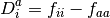
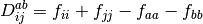
It can be noted that the T1 and T2 equations depends on T1 and T2. Thus it have to be solver iteratively. The initial guess is given as:
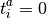
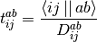
The CCSD energy is then found as:
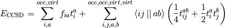
FUNCTION:
- CC.CCSD(F, C, input, results, set)
Input:
- F, fock matrix in spatial basis
- C, MO coeffcients in spatial basis
- input, inputfile object
- results, results object
- set, settings object
Output:
- results, results obejct with added entries
- results[‘ECCSD’] = ECCSD
References:
- http://sirius.chem.vt.edu/wiki/doku.php?id=crawdad:programming:project5
- J.F. Stanton, J. Gauss, J.D. Watts, and R.J. Bartlett, J. Chem. Phys. volume 94, pp. 4334-4345 (1991)
Perturbative Triples Correction¶
To find the perturbative triples correction, the disconnected and connected T3 have to be calculated. The disconnected is found as:
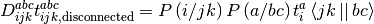
And the connected is found as:
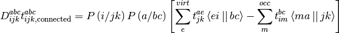
In the above equations the following definitions is used:
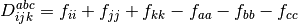
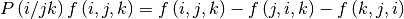
The energy correction can now be found as:
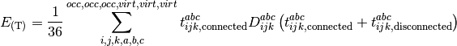
FUNCTION:
- CC.CCSD(F, C, input, results, set)
Input:
- F, fock matrix in spatial basis
- C, MO coeffcients in spatial basis
- input, inputfile object
- results, results object
- set, settings object
Output:
- results, results obejct with added entries
- results[‘E(T)’] = ET
References: